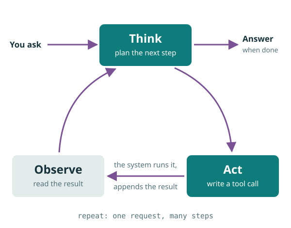
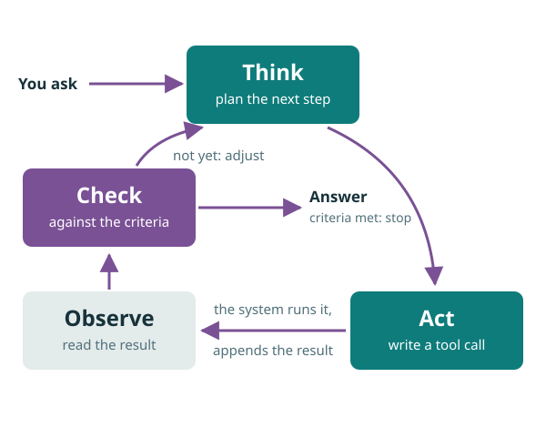
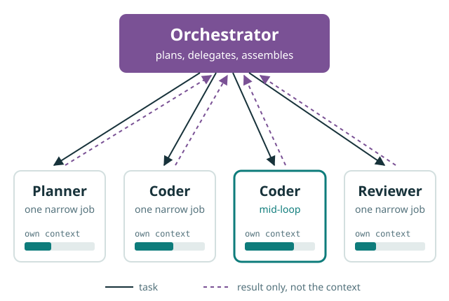

Workshop · Part 2 of 2
Agents, and where this is heading
Agenda
Part 2 · How an agent works
No settled definition: the LLM? The software around it? Both? Vendors mean all three.
Let’s build one, step by step, from the Part 1 chatbot.
Part 2 · How an agent works
weather(city="Paris", day="Sat")Function calling (2023), then MCP (Nov 2024): a common plug for tools.
Part 2 · How an agent works

After every answer, it stops: your turn.
A tool call? Run it, append the result, call the LLM again. It stops only when the LLM answers.
ReAct (Yao et al., 2022): reason + act, interleaved.
Part 2 · How an agent works

AutoGPT (2023) made the loop go viral, before LLMs were reliable enough to check their own work.
Part 2 · How an agent works
SWE-bench (2023) turned “fix a real GitHub issue” into the benchmark; “vibe coding” (Karpathy, Feb 2025) named the practice.
Part 2 · How an agent works
Agency is a degree: how much it does between two of your messages.
A computer of its own
An agent calls tools in a loop until its work passes the checks. But where do those tools run, and on what?
Part 2 · A computer of its own
Part 2 · A computer of its own
Part 2 · A computer of its own
AGENTS.md / CLAUDE.md files; “Claude plays Pokémon” kept notes to carry on. This deck was built the same way.
Part 2 · A computer of its own
The average of everything it has read.
A position, anchored in your sources.
read_file puts the source into the context: grounding, for freePart 2 · A computer of its own
“The total is about 48,000 €”: plausible, unverifiable.
sum(rows) = 48,317.40 €: exact, auditable.
The agent writes code, runs it in a sandbox, and uses the result.
5,000 rows fit in context, but row 4,000 won’t get row 12’s care
Exact totals and rates, not plausible-looking numbers
Same script, next month’s file, auditable line by line
Looping, chaining and recovering tool calls
Plus structured data parsing and precise tool execution.
Part 2 · A computer of its own
Part 2 · A computer of its own
This very deck is checked that way: render each slide to an image, look, fix.
Part 2 · A computer of its own
…then look again: the interface moved.
create_invoice(…)Fast, cheap, stable.
Anthropic computer use (Oct 2024), OpenAI Operator (Jan 2025).
Part 2 · A computer of its own
Part 2 · A computer of its own
Where it is heading
One agent, on a computer of its own, now works alone for hours. Where is this heading?
Part 2 · Where it is heading

Anthropic’s multi-agent research system (2025): lead agent plus parallel sub-agents.
Part 2 · Where it is heading
OpenAI’s own account, announced Sept 2026. Not an ablation, and credit for the idea is disputed.
Part 2 · Where it is heading
The concept lands: the LLM writes requests, software acts
DeepSeek-R1: thinking learned by RL, in an open LLM
Four Harry Potter books in one call
Agents write code to chain their tools
Much less context rot
Hours-long work; images and spatial representation
Part 2 · Where it is heading
METR (2025): the task length at 50% success doubles roughly every seven months.
Part 2 · Where it is heading
Raw completion engine, prone to hallucinations and prompt sensitivity
Human in the loop: today’s standard usage
Machine in the loop: the agent checks its own work
Specialised agents on open-ended science and engineering problems
Part 2 · Where it is heading
A boat-racing agent looped to farm points instead of finishing (CoastRunners, 2016). Coding agents special-case the tests.
Trained on human approval. An update was rolled back in April 2025 for being too flattering.
In simulated companies, some LLMs chose blackmail to avoid being replaced (Anthropic, 2025).
The more autonomy, tools and task length we give, the more it matters: self-verification is only as good as the criteria you set.
Part 2 · Conclusion
Prompt, read, spot the error, correct by hand.
Set the goal and the criteria; the agent executes, checks, self-corrects.
You no longer supply the step-by-step method. You still own the oversight.
Thank you
Supply the context, the instructions and the expected result, and let the loop do the rest.